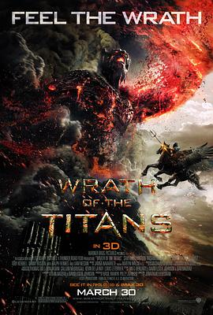

诸神之怒 / Wrath of the Titans
又名：狂．神．魔战(港) / 怒战天神(台) / 诸神之战2：诸神之怒 / 怒天战神
作品信息
| 导演 | 乔纳森·里贝斯曼 |
| 编剧 | 丹·马泽 / 大卫·莱斯利·约翰逊-麦戈德里克 / 格里格·伯兰蒂 / 贝弗利·克罗斯 |
| 主演 | 萨姆·沃辛顿 / 连姆·尼森 / 拉尔夫·费因斯 / 埃德加·拉米雷兹 / 托比·凯贝尔 / 裴淳华 / 比尔·奈伊 / 丹尼·赫斯顿 / 约翰·贝尔 / 莉莉·詹姆斯 / 马特·米尔尼 / 伯克特·图尔顿 / 西妮德·库萨克 / 斯宾塞·怀尔丁 / 豪尔赫·吉梅拉 / 乔治·布莱顿 / 吉尔利安·布尔克 / 基琳·邓恩 / Martin Bayfield / 拉斯科·阿特金斯 / 詹姆斯·迈克尔·兰金 / 保罗·沃伦 |
| 类型 | 动作 / 奇幻 / 冒险 |
| 制片国家/地区 | 美国 |
| 语言 | 英语 |
| 上映日期 | 2012-03-30(美国/中国大陆) |
| 片长 | 99分钟 |
| IMDb | tt1646987 |
最后一次看到是 2026-08-12T21:13:29+08:00 · 豆瓣原页